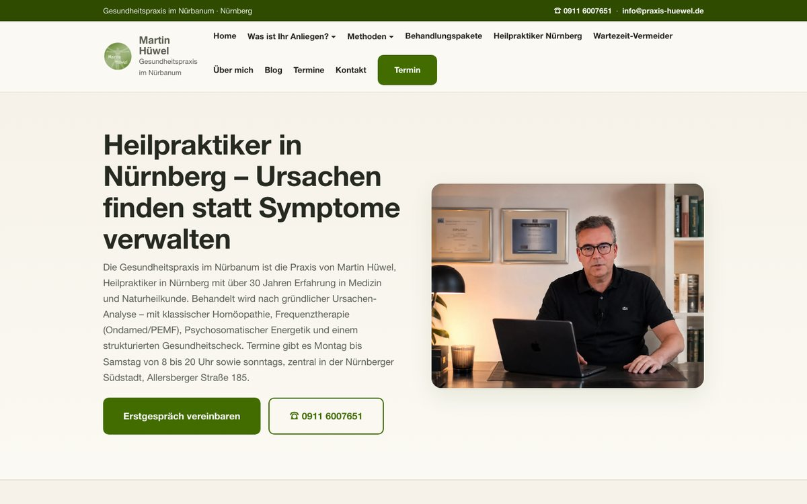

Deine Website mit KI-CMS: per Chat gepflegt, schnell geladen, ohne Baukasten-Abo
Das 741 KI-CMS macht deine Website zur KI-Website: Du pflegst sie selbst mit deiner eigenen KI, zum Beispiel mit ChatGPT Plus. Eine automatische Prüfung stoppt Fehler vor jeder Änderung, und sobald wir freigegeben haben, ist die Änderung in ein bis zwei Minuten live.
Dauer 30 Minuten. Kostenlos und unverbindlich.
- Texte und Preise per Chat ändern, ganz ohne Technikwissen
- Feste Regeln prüfen jede Änderung
- Hosting für 0 € und Hilfe von 741 rund um die Uhr
Live-Beispiel ansehen: www.praxis-huewel.de

Gemessen an einer echten Website, nicht versprochen
Die Website der Praxis Hüwel in Nürnberg läuft seit dem 06.10.2026 mit dem 741 KI-CMS. Wir haben sie am 13.10.2026 in Chrome gemessen.
Kennst du das?
Die meisten Websites sind für Agenturen gebaut. Nicht für die Menschen, die sie jeden Tag brauchen. Mit dem KI-CMS änderst du deine Seite so leicht, wie du eine Nachricht schreibst. Die Prüfung stoppt dabei typische Fehler wie gelöschte Seiten oder kaputte Links.
Dauer 30 Minuten. Kostenlos und unverbindlich.
Du wartest Tage auf eine kleine Textänderung.
Du zahlst jeden Monat für einen Baukasten, den du kaum nutzt.
Du hast Angst, beim Ändern etwas kaputt zu machen.
Deine Seite lädt langsam, und keiner sagt dir, warum.
Alles, was deine Website braucht, in einem Paket
Gebaut oder umgezogen
Wir bauen deine Seite ohne Baukasten und ohne Plugins. Alte Adressen leiten wir weiter, damit Google deine Seiten weiter findet. Mehr zu unserem Webdesign.
Pflege per Chat
Du änderst Texte und Hinweise mit deiner eigenen KI. Dafür reicht ein kostenpflichtiges ChatGPT-Plus-Konto.
Prüfung und Freigabe
Jede Änderung läuft durch eine automatische Prüfung. Danach geben wir sie frei. Jede Version lässt sich in wenigen Minuten zurückholen.
Sichtbar bei Google
Strukturierte Daten stehen auf allen Seiten. Wenn du in deiner Stadt gefunden werden willst, verbinden wir die Seite mit unserem Local SEO und dem Wachstums-Abo.
Formulare ohne Fremd-Tool
Anfragen laufen über ein Backend, das 741 betreut. Die Mails kommen von deinem eigenen Absender. Kontakte und einen Newsletter richten wir auf Wunsch dazu ein.
So startest du in vier Schritten
Gespräch, 30 Minuten.
Wir schauen uns deine heutige Website an. Dann sagen wir dir ehrlich, ob ein Umzug sinnvoll ist.
Bau oder Umzug.
Wir bauen deine Website mit KI-CMS und übernehmen deine Inhalte. Das dauert 2 bis 3 Tage.
Einrichtung, etwa 15 Minuten.
Wir verbinden deine KI einmal gemeinsam mit deiner Website. Du musst nichts installieren.
Ab dann per Chat.
Du schreibst, was sich ändern soll. Wir prüfen und geben frei.
Dauer 30 Minuten. Kostenlos und unverbindlich.
Wer hinter deiner Website steht
Ich bin Martin Drendel, CEO und Gründer von 741.Studio. Unser Team arbeitet remote, verteilt auf Indonesien, Deutschland und Australien. Das KI-CMS ist entstanden, weil Martin Hüwel seine Website selbst pflegen wollte, statt mehrere Tools nebeneinander zu bedienen. Du bekommst von uns Hilfe rund um die Uhr. Mehr über uns.
Praxis Hüwel: altes System 2.000 € im Jahr, Hosting heute 0 €
Vorher liefen die Website der Praxis Hüwel und ihre Kontakte im selben fremden System. Das kostete 2.000 € im Jahr. Seit dem 06.10.2026 läuft die Seite mit dem 741 KI-CMS auf GitHub Pages, betreut von 741, für 0 € Hosting. Domain und E-Mail kosten weiter separat. Auf der Startseite stellt sich Martin Hüwel in einem Video vor, das erst beim Klick lädt.
| Vorher | Heute |
|---|---|
| 2.000 € im Jahr für das alte System | 0 € Hosting, Domain und E-Mail separat |
| Website und Kontakte im selben Tool | 58 Kontakte getrennt im 741-Kundenportal |
| Änderungen im alten System | Änderung per Chat, Prüfung bei jeder Änderung |
Live ansehen: www.praxis-huewel.de
Kostenloses Gespräch buchenWas hinter der Technik steckt
Was ist das 741 KI-CMS?
Das 741 KI-CMS ist ein Content-Management-System, in dem deine eigene KI die Pflege übernimmt. Es ist keine Seite aus einem KI-Generator: Wir bauen deine Website ohne Baukasten und ohne Plugins. Danach darf deine KI sie ändern, aber nur nach festen Regeln. Diese Regeln stehen in zwei Dateien. Die Datei AGENTS.md gibt der KI ein Frage-Protokoll vor, das sie vor jeder Änderung abarbeitet. Die Datei DESIGN.md sperrt Farben und Schriften, dazu die Bausteine deiner Seite. So bleibt dein Design gleich, auch wenn du viele Texte änderst. Bei der Praxis Hüwel gilt dieses System seit dem 09.10.2026.
Was die Prüfung bei jeder Änderung stoppt
Bevor eine Änderung live geht, läuft eine automatische Prüfung. Sie verhindert, dass Seiten oder Bilder gelöscht werden, und sie lässt keine fremden Skripte oder Schriften durch. Auch eingebettete Fremdseiten kommen nicht durch. Kaputte Links und fehlende Bilder meldet sie. SEO-Fehler findet sie ebenfalls, im Titel und in den Überschriften. Sie blockiert Seiten ohne Eintrag in der Sitemap und zu große Bilder. Für Praxen erkennt sie auch Wörter, die nach dem Heilmittelwerbegesetz riskant sind. Erst wenn die Prüfung grün ist, schauen wir uns die Änderung an und geben sie frei. Die Regeln stehen in der Datei pruefung.yml im Projekt deiner Website. Bei der Praxis Hüwel läuft diese Prüfung seit dem 09.10.2026.
KI-CMS, Baukasten oder WordPress?
Ein Baukasten läuft im Abo des Anbieters. Viele zahlen dazu noch für Tools, die sie kaum nutzen. WordPress braucht laufend Updates für Themes und Plugins. Das 741 KI-CMS braucht beides nicht. Deine Website besteht aus fertigen Seiten ohne Plugins. Das Hosting kostet bei der Praxis Hüwel 0 €. Geändert wird per Chat mit deiner eigenen KI, und die Prüfung läuft bei jeder Änderung mit. Wenn du eine WordPress-Alternative suchst, die du trotzdem selbst pflegen kannst, liegt genau hier der Unterschied.
Warum die Seite so schnell ist
Langsame Websites haben meist dieselbe Ursache: zu viele Plugins und Skripte von fremden Anbietern. Eine Website mit dem 741 KI-CMS verzichtet darauf. Die Startseite der Praxis Hüwel macht nur 6 Anfragen und lädt zwei eigene Skripte, eines für Karten und Videos und eines für die Formulare. Karte und Terminkalender laden erst, wenn jemand darauf klickt. So stand der Hauptinhalt in unserer Messung am 13.10.2026 nach 1,3 Sekunden. Die Prüfung sorgt dafür, dass das so bleibt, denn fremde Skripte kommen gar nicht erst durch.
Was beim Umzug mit deinen Rankings passiert
Ein Umzug ist der Moment, in dem viele Websites Besucher verlieren. Meist liegt das an alten Adressen, die plötzlich ins Leere führen. Darum leiten wir jede alte Adresse auf die passende neue Seite weiter. Bei der Praxis Hüwel waren das 88 Adressen. Dazu kommen strukturierte Daten auf allen Seiten, eine saubere Sitemap und eine eigene 404-Seite, die Besucher zurück zur Startseite oder zum Kontakt führt. Bei der Praxis Hüwel haben wir die Sitemap am 11.10.2026 neu bei Google eingereicht. Wie Google die neuen Seiten aufnimmt, prüfen wir danach in der Search Console.
Was laufend kostet
| Posten | Kosten |
|---|---|
| Hosting der Website | 0 € (bei der Praxis Hüwel) |
| Domain und E-Mail | separat, bei deinem bisherigen Anbieter |
| KI für die Pflege | ein kostenpflichtiges ChatGPT-Plus-Konto |
| Bau, Prüfung und Freigabe durch 741 | nennen wir dir im kostenlosen Gespräch |
Wo deine Daten liegen
Bei der Pflege arbeitet die KI nur mit den Dateien deiner Website. Ihr Internetzugang bleibt dabei aus. Anfragen aus deinen Formularen landen nicht bei der KI. Bei der Praxis Hüwel liegen sie in einer Datenbank in Frankfurt (Supabase, Region eu-central-1, Stand 13.10.2026). Die Mails gehen über einen Versanddienst in der EU (Irland) mit der Domain der Praxis.
Antworten, bevor du buchst
Was kostet es, eine einfache Homepage erstellen zu lassen?
Den Preis für deine Website mit KI-CMS nennen wir dir im kostenlosen Gespräch. Er hängt davon ab, ob wir neu bauen oder deine bestehende Seite umziehen. Das Hosting kostet 0 €, Domain, E-Mail und dein ChatGPT-Plus-Konto laufen separat.
Wie erstelle ich eine Internetseite mit KI?
Du kannst eine Seite mit einem KI-Baukasten erzeugen. Dann zahlst du meist ein Abo beim Anbieter. Mit dem 741 KI-CMS bauen wir die Seite für dich. Danach pflegst du sie selbst mit deiner eigenen KI.
Kann man eine Website selber erstellen?
Ja. Viele scheitern aber an der Pflege. Bei uns ist der Bau unsere Aufgabe und die Pflege deine. Du schreibst im Chat, was sich ändern soll.
Brauche ich Technikwissen?
Nein. Du schreibst im Chat, was sich ändern soll. Die Einrichtung machen wir einmal zusammen, in etwa 15 Minuten.
Was passiert, wenn ich etwas falsch mache?
Die KI ändert nur eine Kopie. Die Prüfung stoppt typische Fehler wie gelöschte Seiten, kaputte Links oder fremde Skripte. Und wir geben jede Änderung frei. Jede Version lässt sich in wenigen Minuten zurückholen.
Kann ich meine bestehende Website umziehen?
Ja. Wir übernehmen deine Inhalte und leiten alte Adressen weiter. Bei der Praxis Hüwel waren das 88 Adressen.
Mit welcher KI funktioniert das?
Bei der Praxis Hüwel läuft die Pflege mit ChatGPT im Plus-Konto, im Bereich Codex. ChatGPT arbeitet dort in der Cloud direkt mit dem Projekt deiner Website. Auf deinem Computer liegt nichts, das verloren gehen kann.
Was, wenn mein KI-Konto ein Limit erreicht?
Das Plus-Konto hat ein Nutzungsfenster. Ist es erreicht, wartest du ein paar Stunden und machst dann weiter. Deine Website läuft in der Zeit ganz normal weiter.
Wer hilft mir nachts?
Wir. Du bekommst von 741 Hilfe rund um die Uhr, wenn deine KI nicht weiterkommt. Schreib uns im Chat deines Kundenportals, für Dringendes per WhatsApp.
Ist die Seite schnell?
Bei der Praxis Hüwel war der Hauptinhalt in unserer Messung am 13.10.2026 nach 1,3 Sekunden geladen. Die Startseite lädt kein einziges fremdes Skript.
Du bist nie allein mit deiner Website
Deine KI setzt deine Wünsche um. Wir geben jede Änderung frei und helfen dir rund um die Uhr. Wenn du zusätzlich Kontakte oder einen Newsletter brauchst, richten wir das auf Wunsch ein. Beispiele unserer Arbeit findest du im Portfolio.
Bereit für eine Website, die du per Chat änderst?
- Ohne Baukasten und ohne Plugins gebaut
- Änderungen per Chat, mit Prüfung vor jeder Änderung
- Hosting für 0 € und Hilfe rund um die Uhr
Praxis Hüwel, Nürnberg: seit Oktober 2026 live, Hauptinhalt nach 1,3 Sekunden geladen.
Dauer 30 Minuten. Kostenlos und unverbindlich.